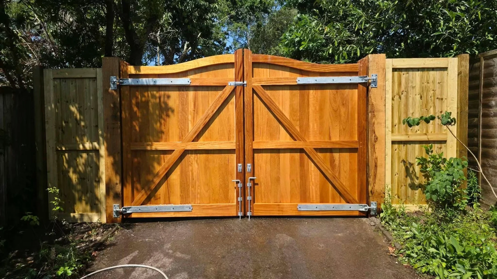
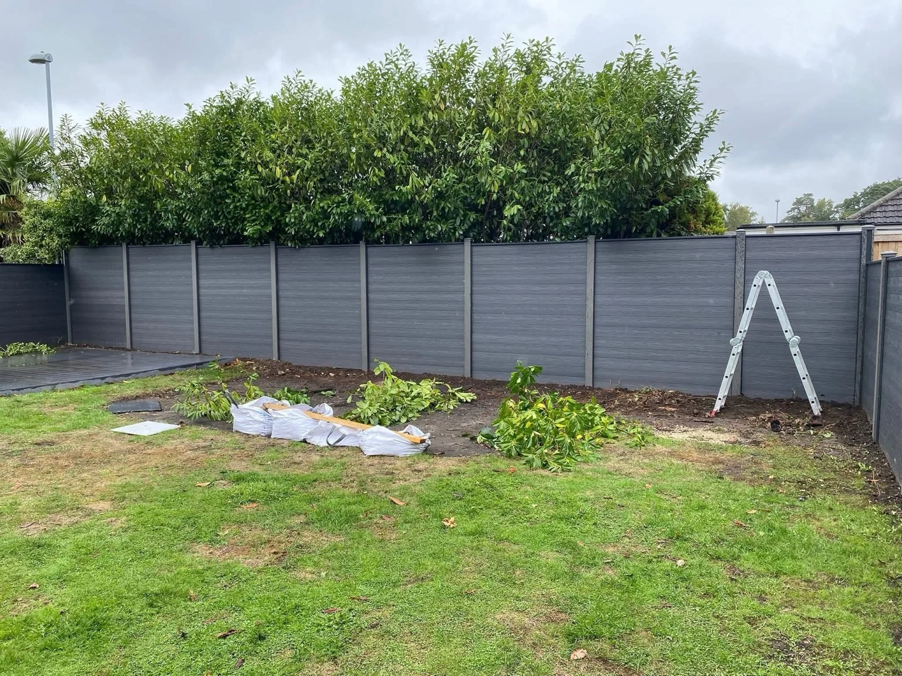

FENCING & GATES · POOLE
Make your space yours.
A fence sets the tone for the garden. A gate makes the entrance work. The Fence Guys takes fencing and gate enquiries in Poole, with a portfolio spanning traditional timber and modern grey finishes.
Browse the projects, choose the look you like and send a few photos of your space to start the conversation.
Tell us about your project →

AN ENTRANCE THAT FITS
Open to possibilities.
Timber double gates can give a driveway or side passage a defined finish. These separate projects show two approaches to the entrance, with different settings and timber details.
Explore gates →OUR WORK
Built around the garden.
Every space has its own shape and character. Tap any project photograph to see the complete view.
Timber, naturally.
Warm timber panels and longer boundary runs.
MODERN FINISHES
A cleaner line.
Grey and dark panel projects, with different garden layouts and boundary lengths.
THE DETAILS MATTER
From corner to gate.
A corner boundary and a timber driveway entrance show how fencing and gates meet the shape of the property. Share your measurements, photos and preferred finish to discuss your own project.
Boundary fencing →
THE FENCE GUYS
Fencing.
Gates. Your space.
Based in Poole, The Fence Guys is a fence and gate contractor. The work shown here includes garden panels, timber boundaries, contemporary finishes and double gates.
Send an overview, approximate lengths and your postcode.
Tell us about height, privacy, materials and gate access.
Agree the scope, access, quote and availability before booking.
CUSTOMER RECOMMENDATIONS
100% recommendBased on 58 Facebook reviews.
LOCAL FENCING & GATES
Based in Poole.
Include your postcode when you enquire so your location, access and project availability can be confirmed.
GET A QUOTE
Let’s talk boundaries.
Choose the work you need and tell us about the space. The form opens WhatsApp with your details ready to review and send. Add your project photos there.
Approximate measurements, existing fence photos and details of access help explain the job.
Your details are only shared when you send the message. Privacy information.GOOD TO KNOW
A few answers.
What can I enquire about?
Timber fencing, contemporary panel styles, property boundaries, driveway gates and side gates. Share the details so the work can be discussed.
Where are you based?
The Fence Guys is based in Poole. Include your postcode to confirm your location and availability.
What should I send for a quote?
Photos of the existing boundary or entrance, approximate measurements, your postcode and details of access. Include your preferred material and height if you know them.
Can I ask about driveway gates?
Yes. The portfolio includes double timber driveway gates and side access gates. Send the opening width and photos of the entrance.
Do you have different fence finishes?
The project photographs include natural timber, grey panels and dark horizontal finishes. Tell us which look you prefer so the material and specification can be discussed.
Can I replace an existing fence?
Send photos of the existing panels, posts and ground conditions to discuss a replacement. Explain what you would like to keep or change.
THE FENCE GUYS · POOLE
Ready for a new boundary?
Call us or send a few photos on WhatsApp.